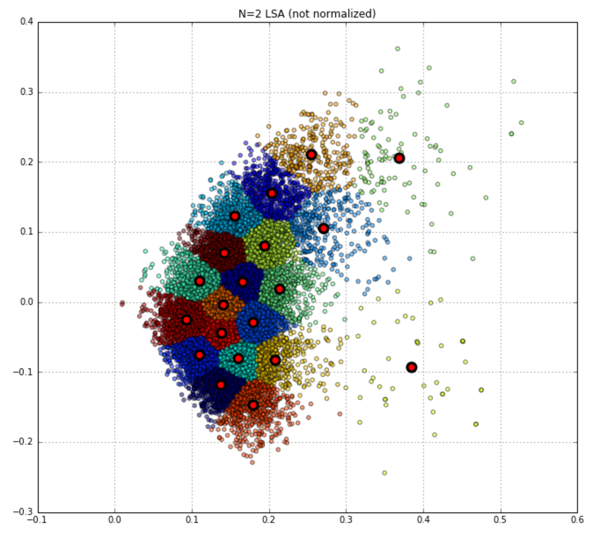
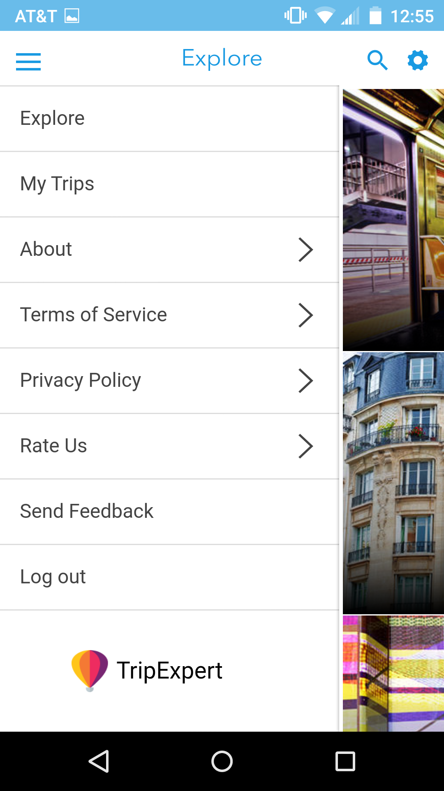
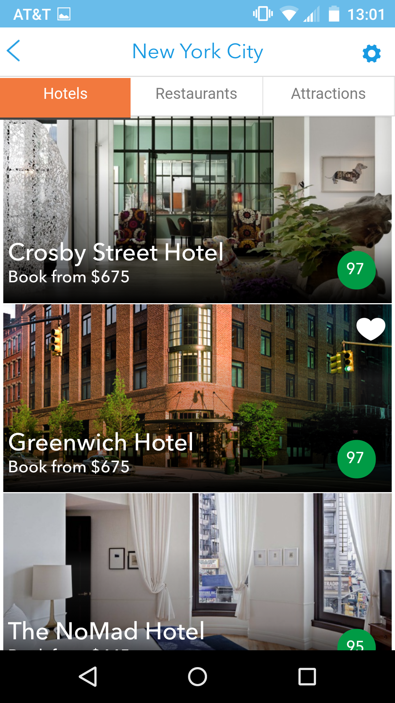
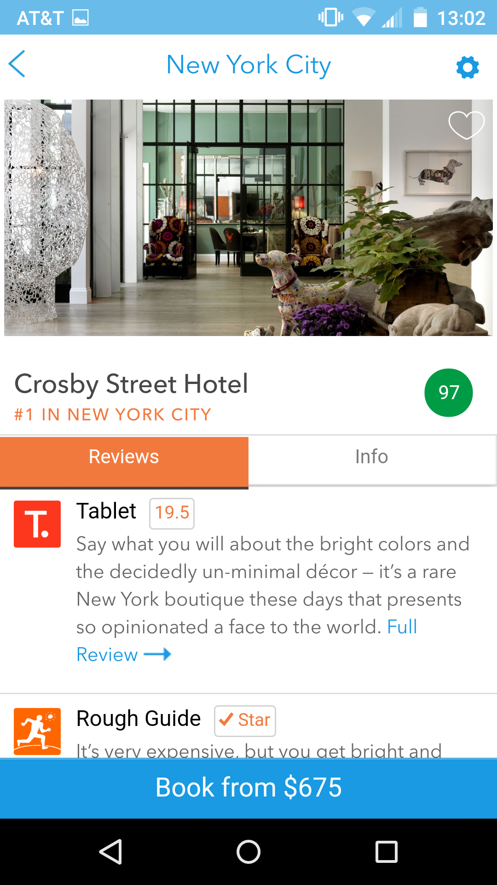
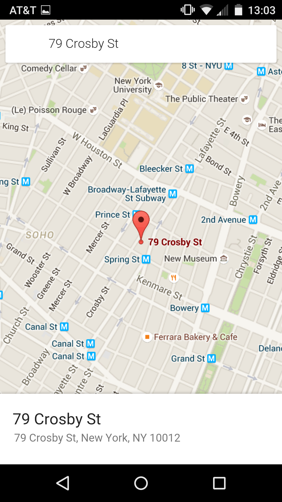
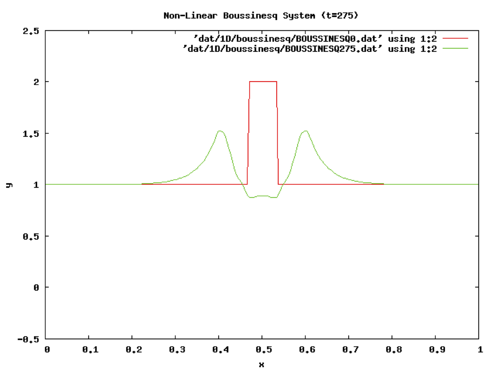

I'm Josh Wilson. I'm a programmer and project manager that hails from El Dorado (el doe-ray'-doe), AR but currently lives in Brookyn, NY. @wilsojb is my handle on many services (when I signed up for gmail in 2005 'wilsonjb' was already taken!). Some of my favorite things include bbq, snowboarding, this font, this blog post, and this book.
While you're here, take a look at what's been keeping me busy. If you have something you'd like to build and you think I could help, then please reach out. I'm currently interested in data visualization, machine learning, and full-stack development.
The best way to reach me is via wilsojb at gmail dot com. I am also active on twitter, instagram, and github. If you are going to read my resume, you should also check linkedin.
I’ve been writing code for over a decade. Over that time, many languages have had the dubious distinction of being my “main” language. I cut my teeth on TI-BASIC in high school and (more formally) on Java in undergrad. C++ and Fortran90 came in handy during graduate school. I hacked Perl and Bash scripts for Wall Street for awhile before eventually finding (and falling for) Python. I've been the sys admin of a large-ish MongoDB cluster and also one of its lead developers. Somewhere along the way, I stumbled into Javascript and the rapidly evolving world of frontend tooling and frameworks. Lately, I've been contributing to ParseKit at Enigma.
Python is still my area of expertise, but I'm constantly learning more about today's client-side web as well as mobile and desktop integration. While I'm good at implementing the layers needed to make things work, I am not comfortable with buzzwords like "Full-stack Developer". For the purposes of classification, the phrases "backend engineer", "internal tools developer", and "casual frontend developer" probably describe me the best. I also have experience doing the job of a "site reliability engineer" though I don't enjoy that line of work anymore.
I used to be fairly dogmatic about object-oriented design (as is probably anyone that started with Java), but now I favor a more balanced approach. I value 80 char limits, simple interfaces, PEP8 compliance, and the spectrum between writing well-tested architectures and getting things done. One of the most valuable skills a person can have is the ability to learn, closely followed by the ability to know when you don't know something. I try to keep this in mind when starting a new project.
I've built apps for both mobile and desktop, hacked on web crawlers, written internal tools for a top hft firm, and even designed a thrust sensor for a rocket. I've dabbled in home brewing, once constructed a 15ft. tall trebuchet, and enjoy (continually) fixing my 1999 Jeep Cherokee. I grew up in a house full of tools, half-finished projects, and DIY attitudes, which has definitely shaped who I am today. In my experience, the two most important aspects of building (almost) anything is to view shipping as a feature and to remember to have fun.
I also like to help others build things. I've advised startups, managed freelancers, and worked in tight-knit teams of programmers. Each of these areas have challenges and rewards. I appreciate thoughtful code reviews, sensible testing, and a pragmatic release process. Not all problems are technical in nature, so neither are all solutions. If you have something you'd like to build and you think I could help, then please reach out.
Data Engineering! ETL!
I took an 11 week machine learning course from General Assembly and walked away a jupyter notebook and scikit-learn aficionado. My final project involved clustering articles from my getpocket.com account using kmeans and a tf-idf vectorizor. I used diffbot for most of the ETL. All of the code can be found on github.

S&J had some unique ideas in mind for their wedding website. Both being outgoing extroverts that love to entertain, they wanted their wedding website to reflect the awesome wedding weekend they had planned for their friends and families. Simply put, generic wedding website builders like the knot weren't gonna cut it. I used MongoDB, Express, AngularJS, and Node.js for the stack and integrated Auth0 on top of it to provide a custom login for each of their guests.
Clicking on the first link in the main text of a Wikipedia article, and then repeating the process for subsequent articles, usually eventually gets you to the Philosophy article. I wrote some code in Python that shows this is true. For more info, check out the actual Wikipedia page on this subject!
I developed a cross-platform hybrid mobile app (AngularJS, Cordova) and its backend service (Python, MongoDB) that complements www.tripexpert.com.
   
Simple (temporary) website deployment from the command line. An experiment that used Flask, Google App Engine, and Datastore.
I spent most of my time developing internal tools and services in Python and MongoDB, as the company grew from 60-100+ employees. This is where I learned everything I know about systems programming, test-driven development lifecycles, and the data pipeline. I played an integral role in converting a legacy code base into a library of tools that helped their business internationally scale. My day consisted of reviewing pull requests, committing quick fixes and new features, and dealing with the occasional market outage.
An object oriented framework for solving and analyzing PDEs. This project grew organically while I worked on my graduate degree. The goal of the framework was to abstract away the mechanics and other "lower level" code needed to solve PDEs so the researcher can spend more time focusing on their solver (i.e. their "business logic"). The code can be found on github.
